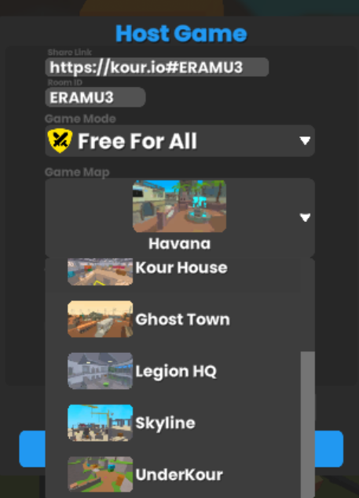

Los mapas de Kour.io están llenos de zonas elevadas, rampas y espacios abiertos que favorecen el movimiento ágil. Para aprovecharlos al máximo, toma en cuenta estos consejos:
- Usa los saltos en cadena para moverte más rápido.
- Deslízate por rampas para conservar la velocidad.
- Evita quedarte quieto: el movimiento constante te hace más difícil de alcanzar.
- Aprende las rutas más cortas hacia los puntos de captura.
Con práctica podrás anticipar los movimientos de tus rivales y dominar el ritmo de la partida.